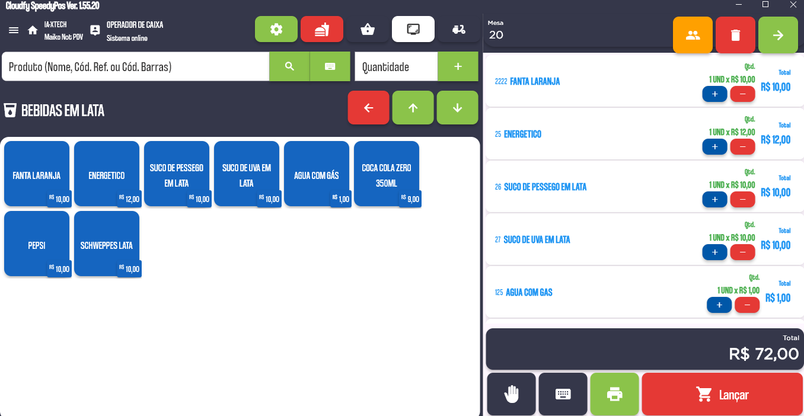
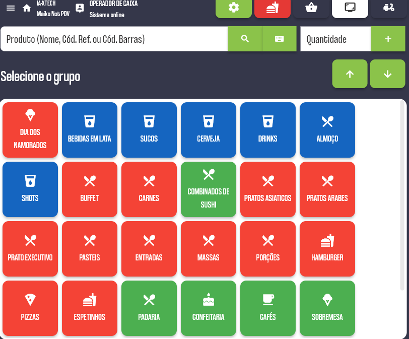

▦
PDV rápido e intuitivo
Venda no balcão, mesa, comanda ou delivery com uma operação simples e segura.
Operação ágilPDV, mesas, comandas, estoque, financeiro, produção e integrações em uma plataforma completa, com implantação e suporte especializado.

Do atendimento à gestão, a IA-XTECH conecta processos, reduz retrabalho e entrega informações para decisões mais rápidas.
Venda no balcão, mesa, comanda ou delivery com uma operação simples e segura.
Operação ágilControle consumo, transferências, taxas e fechamento sem perder a visão do salão.
Atendimento organizadoFluxo de caixa, contas a pagar e receber, conciliações e relatórios gerenciais.
Decisões melhoresAcompanhe movimentações, custos, perdas, necessidades de compra e inventários.
Menos desperdícioOrganize fichas técnicas, produção, impressão e acompanhamento dos pedidos.
Processos conectadosTEF, meios de pagamento, delivery, fiscal e outros recursos para uma operação completa.
Mais produtividadeInterfaces objetivas, recursos acessíveis e informações organizadas para a equipe trabalhar com velocidade desde o primeiro atendimento.

Configurações e fluxos pensados para diferentes modelos de atendimento e operação.
Mesas, comandas, cozinha, delivery e fechamento integrado.
PDV, produção, ficha técnica, estoque e controle de perdas.
Tamanhos, sabores, adicionais, bordas, delivery e salão.
Vendas, estoque, compras, financeiro e emissão fiscal.
Agilidade no balcão, controle de produtos e gestão simplificada.
A IA-XTECH atua com soluções de gestão e automação comercial, oferecendo implantação, treinamento e suporte para empresas de food service e varejo.
Nosso trabalho é entender a rotina de cada cliente, configurar a melhor operação e acompanhar o uso do sistema para que a tecnologia gere resultado de verdade.
Preencha os dados e solicite uma demonstração personalizada para o seu segmento.
WhatsApp(34) 9 9679-0001